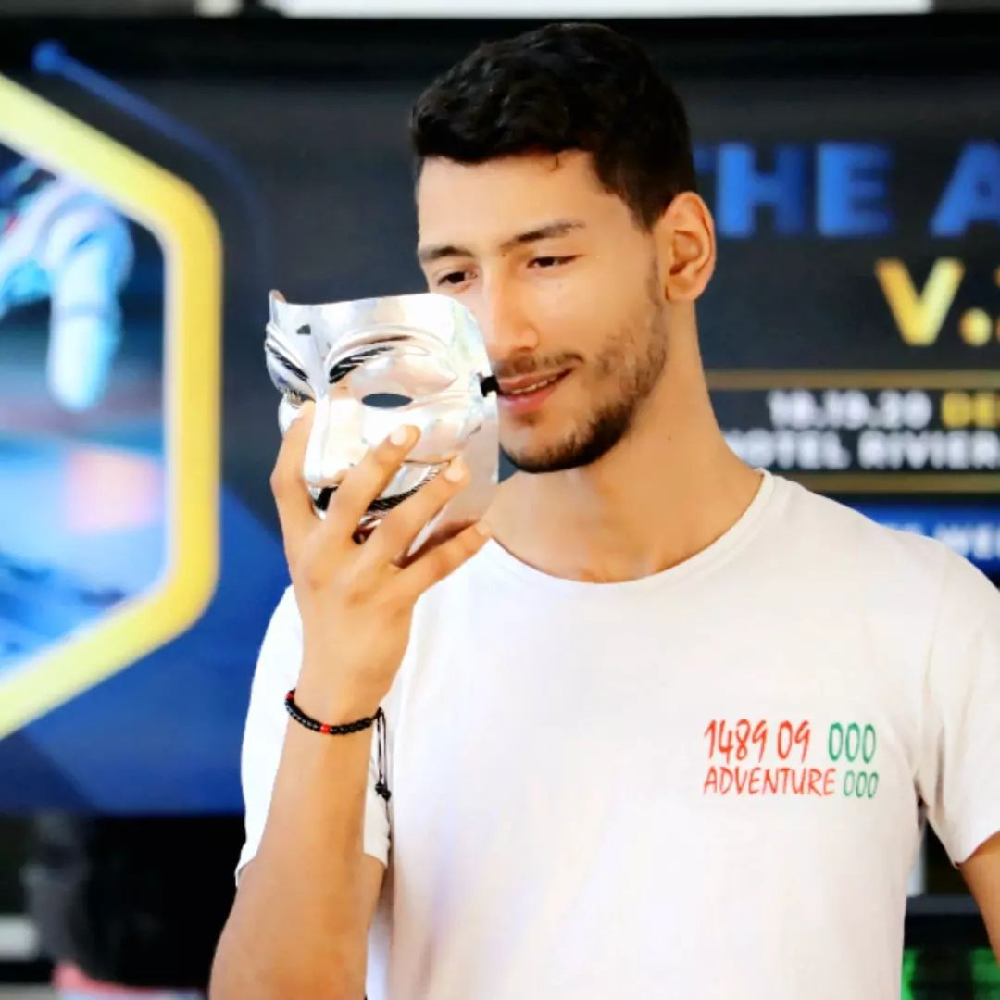
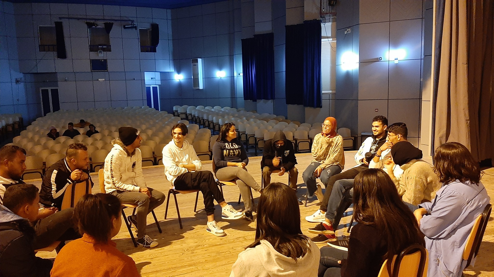
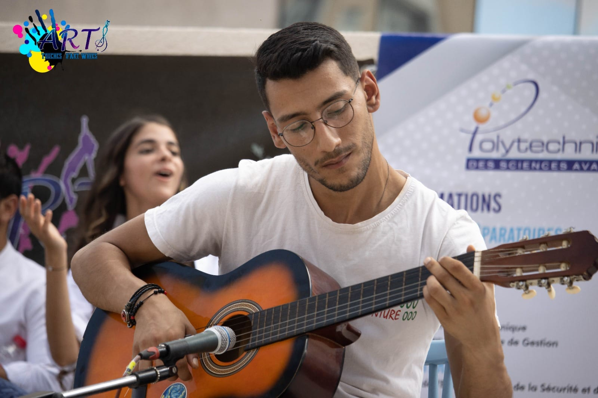
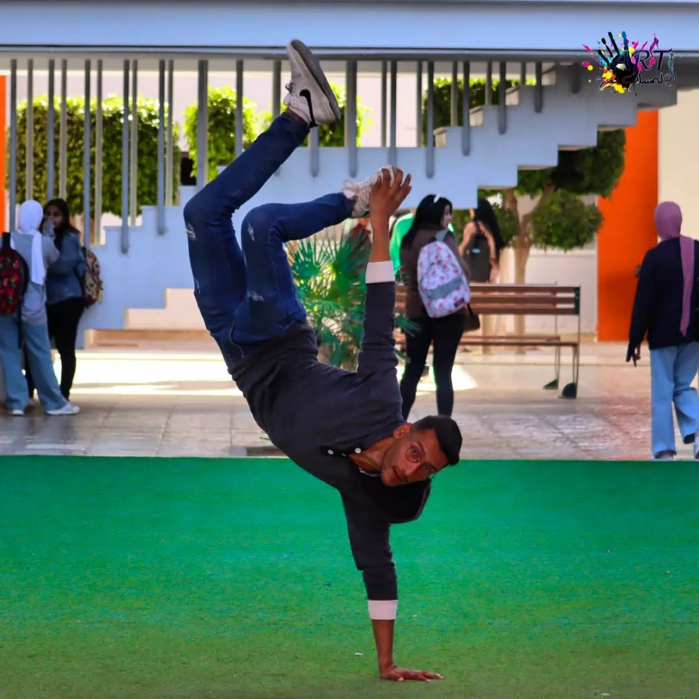

Membre — Enactus ENET'Com
Sessions de brainstorming, projets à impact social et solutions innovantes adaptées aux problématiques locales. Travail en équipe dans un environnement orienté entrepreneuriat et innovation.

Étudiant en informatique dynamique et polyvalent, j'ai participé à des projets techniques variés en maintenance informatique, développement web et installation réseau. Curieux et motivé, j'aime les environnements collaboratifs et les défis technologiques.
Mon objectif : créer des solutions efficaces, accessibles et utiles pour les utilisateurs — tout en approfondissant mes compétences en cybersécurité, en développement mobile et en intelligence artificielle.
Un profil multilingue, à l'aise dans des équipes internationales et bilingues.
L'esprit d'équipe, l'entrepreneuriat et l'expression artistique au cœur de mon engagement étudiant.
Sessions de brainstorming, projets à impact social et solutions innovantes adaptées aux problématiques locales. Travail en équipe dans un environnement orienté entrepreneuriat et innovation.
Organisation et animation d'ateliers musicaux pour les étudiants, formation et accompagnement des membres dans la pratique musicale, et sensibilisation à l'importance de l'expression artistique.
Ce qui me nourrit au quotidien et alimente ma créativité.

Théâtre & scène
Musique — Piano & guitare
Danse